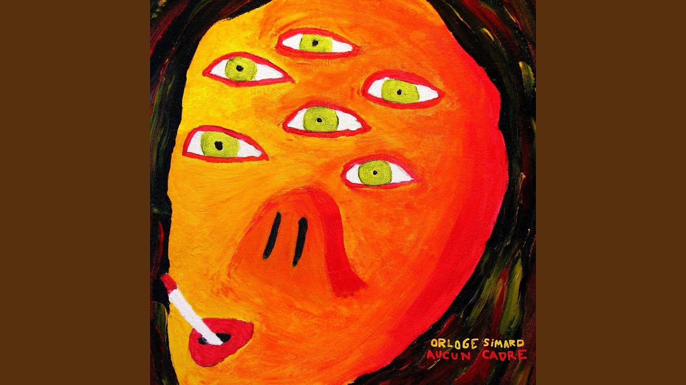

| Artiste | Orloge Simard | ||||||||
| Album | aucun cadre | ||||||||
|  | Piste | Titre | Durée | ||||||
| 1 | aucun cadre | 2:13 | |||||||
| 2 | La rue bagot | 2:06 | |||||||
| 3 | hymne à la bière | 2:00 | |||||||
| 4 | Bancs de brouillard | 3:58 | |||||||
| 5 | 12 pouces | 3:19 | |||||||
| 6 | J.R | 3:34 | |||||||
| 7 | Mireille | 4:49 | |||||||
| 8 | Trip de mush | 3:47 | |||||||
| 9 | Neige et peanut | 2:44 | |||||||
| 10 | Plotte au bic | 2:51 | |||||||
| 11 | Lac otis | 2:49 | |||||||
| 12 | Le baieriverain | 7:47 | |||||||
| 13 | Crisse que chu ben | 2:34 | |||||||
| 14 | Lac edgar | 5:51 | |||||||
| Source | lien vers bandcamp | ||||||||